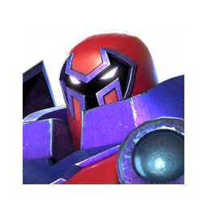
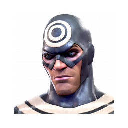

War Map
Abre el planner visual actual y acomoda a los defensores directamente sobre el mapa de guerra.
 AW PLANNER
AW PLANNERAbre el planner visual actual y acomoda a los defensores directamente sobre el mapa de guerra.
Organiza tres grupos de diez jugadores y asigna cinco defensores a cada miembro.


Planeación de rutas y atacantes. Se desarrollará después del MVP defensivo.
Biblioteca de rosters para reutilizar campeones en futuras guerras.